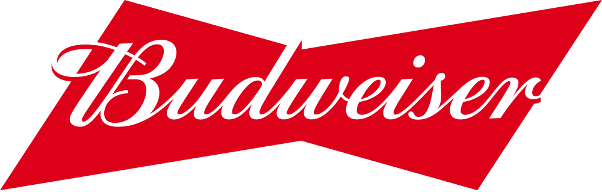

홈 > 브랜드 매거진 > 버드와이저
버드와이저
버드와이저(Budweiser)는 아돌푸스 부시가 1876년 출시한 미국의 아메리칸 라거 맥주 브랜드이다.
산업 분야 식음료 · 공개 등급 편집 검수 · 브랜드 평가 4.7 ★


한눈에 보는 브랜드
버드와이저는 1876년 독일 이민자 출신 양조가 아돌푸스 부시(Adolphus Busch)가 친구 칼 콘라드와 함께 미국 미주리주 세인트루이스에서 선보인 라거 맥주다. 부시는 저온살균과 냉장 철도차량을 도입해 미국 최초의 전국 유통 맥주를 만들었고, 이것이 첫 번째 전환점이었다.
두 번째 전환점은 2008년 벨기에·브라질계 인베브와의 합병으로, 모회사 AB인베브 산하에서 약 150개국에 판매되는 세계 최대 맥주 브랜드 중 하나로 자리 잡았다.
브랜드 관점
버드와이저의 핵심 차별점은 맛의 우위보다 1968년 상표 등록된 '맥주의 왕(King of Beers)' 포지셔닝과 클라이즈데일 말, 보타이 로고로 쌓아 올린 정서적 브랜드 자산에 있다. 광고는 제품 성능보다 유머와 감동으로 미국적 정체성을 환기한다.
현재 AB인베브 산하 약 630개 브랜드의 대표 격이며, 글로벌 물량의 절반 이상을 미국 밖 중국·아시아에서 거둔다. 최근 최대 변화는 자매 브랜드 버드라이트의 논란이다.
2023년 봄 트랜스젠더 인플루언서 마케팅이 불매운동을 촉발해 북미 매출이 약 14억 달러 급감했고, 버드라이트는 모델로에 미국 1위 자리를 내줬다. 한국에서는 미국산 수입과 종량세 전환 후 국내 라이선스 생산이 병존하며, 오비맥주가 유통을 맡아 편의점 수입맥주 주력으로 자리한다.
시작과 성장
시작은 1876년 아돌푸스 부시와 칼 콘라드가 체코식 페일 라거를 본떠 만든 버드와이저였다. 부시는 1876년 도입한 냉장 철도차량과 저온살균, 병입 기술을 결합해 더운 계절에도 변질 없이 맥주를 전국으로 운송했고, 이는 지역 양조 산업을 전국 브랜드로 바꾼 결정적 동력이었다.
회사는 1879년 안호이저-부시 양조협회로 개칭됐고, 1880년 안호이저 사망 후 부시가 사장에 올랐다. 20세기 들어 미국 판매 1위 맥주로 성장했으며, 2008년 11월 인베브가 약 520억 달러에 안호이저-부시를 인수해 세계 최대 양조 기업 AB인베브가 출범했다.
이후 버드와이저는 중국을 비롯한 아시아 시장 공략으로 국제 확장을 가속했고, 오늘날 글로벌 물량의 절반 이상을 미국 밖에서 거두는 세계적 브랜드가 됐다.
브랜드 아이덴티티
브랜드 핵심 가치는 미국적 정통성과 장인 정신의 결합이다. 시각 정체성의 중심은 양옆이 비스듬히 기운 변형 보타이(bowtie) 형태의 빨강 로고로, 날카로운 각과 깔끔한 윤곽이 진취성과 안정감을 상징한다.
빨강과 흰색 조합은 성조기를 연상시키며 애국심과 국가 정체성을 환기하고, 빨강은 식욕을 자극해 매장과 술집에서 시선을 끈다. 브랜드명 아래 '맥주의 왕' 선언이 위상을 강조한다.
타깃은 노동 계층 정서를 공유하는 폭넓은 성인 대중이며, 클라이즈데일 말과 로고를 앞세운 유머·감성 광고로 따뜻하고 친근한 보이스를 유지한다.
제품과 서비스
대표 제품은 곡물향과 강한 탄산이 특징인 버드와이저 라거이며, 저칼로리 라이트 라거 버드라이트가 미국 시장의 양대 축이다. 한국에서는 미국산 수입과 국내 라이선스 생산이 함께 유통되며 740밀리 캔 등 다양한 용량으로 판매된다.
오비맥주가 국내 유통을 담당하고, 2024년 11월부터 출고가를 평균 8% 인상해 500밀리 한 캔 편의점가가 약 4,900원 수준으로 형성됐다. 편의점 수입맥주 묶음 판매와 음식점 채널을 주력으로 한다.
현재 상태
본사는 미국 미주리주 세인트루이스의 안호이저-부시이며, 모회사는 벨기에 뢰번에 본사를 둔 세계 최대 양조 기업 AB인베브다. AB인베브는 약 150개국에 630여 개 브랜드를 두고 연 매출 약 590억 달러 규모를 기록하며, 2024년 3분기 매출은 약 155억 달러로 미국 시장 회복세를 보였다.
버드와이저 단일 브랜드의 정확한 글로벌 매출과 영업이익은 미공개다.
타임라인
BI/CI 변천사
 BI/CI 아카이브대표 브랜드 마크
BI/CI 아카이브대표 브랜드 마크
BI/CI 아카이브BI/CI 아카이브함께 읽을 브랜드
 식음료 · 편집 검수하인즈
식음료 · 편집 검수하인즈하인즈(Heinz)는 1869년 헨리 J. 하인즈가 미국 펜실베이니아주 샤프스버그에서 설립한 식품 회사로, 케첩을 비롯한 가공식품으로 유명하다. 2015년 크래프트...
버거킹는 미국의 식음료 브랜드로, 맛, 메뉴 구성, 패키지, 매장 또는 유통 채널이 함께 브랜드 경험을 만드는 영역입니다.
BI
비비고
식음료 · 자료 기반비비고비비고(bibigo)는 CJ제일제당이 2010년 출시한 글로벌 한식 브랜드로, 만두·김치·즉석밥·한식 소스 등 100여 종의 한국 식품을 약 70개국에서 판매한다.
맥도날드는 가장 평범한 소비재를 세계 어디서나 읽히는 대중문화의 기호로 바꾼 브랜드다. 햄버거와 감자튀김은 단순한 메뉴지만, 맥도날드는 속도, 표준화, 접근성, 익숙...
네슬레(Nestlé)는 스위스 브베에 본사를 둔 세계 최대 규모의 식음료 다국적 기업이다.
 식음료 · 편집 검수말보로
식음료 · 편집 검수말보로말보로(Marlboro)는 필립 모리스가 1924년 도입한 미국의 담배 브랜드이다.
 식음료 · 매거진 완성스타벅스
식음료 · 매거진 완성스타벅스스타벅스는 커피를 팔면서 동시에 사람들이 머무는 시간과 공간의 감각을 설계한다. 음료는 핵심 상품이지만, 브랜드의 차별성은 매장 안에서 보내는 시간, 주문 언어, 조...
 식음료 · 매거진 완성앱솔루트
식음료 · 매거진 완성앱솔루트앱솔루트는 보드카 병 하나를 광고와 예술의 반복 가능한 캔버스로 만든 브랜드다. 제품 형태의 일관성을 유지하면서도 캠페인마다 다른 문화적 해석을 입혀, 단순한 병을...